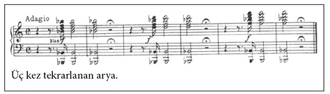
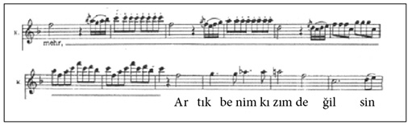

Sihirli Flüt (1791)
Biri, “Yardım edin” diye haykırır. “Merhametli tanrılar, bana yardım edin!” diyerek var gücüyle koşar. Adamın peşinde dev bir yılan vardır. Dev yılan tıpkı bir ejderha gibi ağzından ateşler saçarak hızla adama yaklaşır. Adam sonunda daha fazla dayanamaz, gücünü kaybedip bayılır. Neyse ki tanrılar onun yardım çığlığına kayıtsız kalmazlar. Canavarı öldürmek üzere eli silahlı üç kadın (peri) gönderirler. Kadınlar canavarı öldürüp parça parça ederler. Sonra da kazandıkları bu büyük başarıyı kutlayarak, “Zafer! Zafer!” diye haykırırlar.
Zafer kutlamalarının ardından, bilinçsiz bir şekilde yerde yatan güzel yüzlü Prens Tamino’yu görürler. Prensin görüntüsü karşısında adeta büyülenirler. Cesur ve atılgan kadınların içinde şefkat uyanır. Birine âşık olacaklarsa, o kişi bu adamdan başkası değildir, öyle de olur. Kadınların üçü de prense âşık olurlar. Üçünden biri diğerlerinden önce davranıp, yerde yatan adamın uyandırılması gerektiğini, bu nedenle diğerlerinin onsuz geri dönmeleri gerektiğini söyleyince, diğer ikisi kıskançlık gösterip mızıldanır. Üçü de prensi uyandırmak ister. Birbirlerine söylenirler, hileye başvurarak diğerlerini kandırmayı denerler, kısacası, Prens Tamino’nun yanında kalmak için ellerinden geleni yaparlar. Üçü de geri adım atmaz. Sonunda, çareyi adama hep birlikte “Hoşça kal, yeniden görüşmek umuduyla!” deyip tanrıçanın yanına gitmekte bulurlar.
Tamino nihayet kendine gelir. Daha sersemliğini atamadan doğrulur ve canavarın paramparça olmuş bedenini görür. Hafızasını zorlar. Neler olduğunu hatırlamaya çalışır. Ancak başaramaz. Burası neresidir? Neler olmuştur? Yılanı kim öldürmüştür? Hayatta kalmayı başarmış mıdır? Bir saniye, kulağına gelen bu ses de nedir? Bu bir panflüt sesidir, çok hızlı bir biçimden inceden kalına doğru çalınır. Ses biraz daha yaklaşınca Tamino flütü çalan kişiyi de görür. Çok tuhaf görünen adam, tıpkı bir cennet kuşunu andırır. Rengârenk kıyafetler giymiş, her yanına tüyler yapıştırmıştır, şapkasında bile renkli tüyler vardır. Sırtında ise kocaman bir sepet, sepetin içinde de canlı kuşlar vardır. Elinde de küçük bir flüt. Yabancı, sürekli beş sesten oluşan o melodiyi çalar, çalmadığı zamanlarda da şarkı söyler. Tamino ihtiyatlı davranıp saklanır ve saklandığı yerden adamın söylediği neşeli şarkıyı dinler.
Bu tuhaf adam şarkısında kuş avcısı olduğundan, kaygısız bir hayat sürdüğünden bahseder ve dünyadaki tüm genç kızları elindeki ağ ile yakalamak gibi bir hayali olduğundan dem vurur. Sonra aralarından en güzelini seçecek, kıza şeker verecek, onu öpecek, onunla yatacak ve böylece karıkoca olacaklardır. Papageno için her şey işte bu kadar kolaydır.
Tamino saklandığı yerden çıkınca Papageno boş bulunup korkar. Birbirlerini ürkek bir biçimde şüpheci gözlerle süzerler. Sonunda meraklarına yenik düşerler. Çekinerek birbirlerine “Hey sen!” ve “Hey oradaki” diye seslenirler. Yavaş yavaş sohbet etmeye başlarlar. İkisi de kendileri için önemli olan şeylerden bahseder. Papageno biraz daha fazla konuşur. Tamino onun kuş avcısı Papageno olduğunu, kuşları avlayıp “Gecelerin Kraliçesi”ne gönderdiğini, karşılığında da kraliçenin hizmetkârlarından yiyecek ve içki aldığını öğrenir. Tamino onun pek de zeki biri olmadığını, ama hazırcevap ve nüktedan bir tabiat çocuğu olduğunu, neticede sempatik biri olduğunu düşünür.
Papageno karşısındaki kişinin uzak diyarlardan gelen bir prens olduğunu öğrenince şaşırır. Ona, yıldızlar kadar parlak olan tanrıçayı görme arzusundan derhal vazgeçmesini tavsiye eder. Hiçbir ölümlü bunu başaramamıştır. Buna rağmen şansını denemek isterse, Papageno kaba kuvvet kullanmak zorunda kalacak, onu yakalayıp işkence etmesi için üç kadın hizmetkârına teslim ederek kraliçeye gönderecektir. Papageno, prensi çok güçlü olduğu konusunda da uyarmayı ihmal etmez. Bu da yetmezmiş gibi, Papageno daha da ileri giderek yılanı da hiçbir araç kullanmaksızın, çıplak elle öldürdüğünü ileri sürer. Papageno bu kez çizmeyi aşmıştır. Üç kadın yeniden ortaya çıkar ve Papageno’yu yalan söylediği için cezalandırırlar. Yiyecek ve içki yerine bu kez ona taş ve su verirler, ağzına da kilit vururlar – onu asıl üzen de bu olur. Böylece Papageno konuşamaz olur. Kraliçenin hizmetindeki üç kadın Tamino’ya yılanı, çenesi düşük Papageno’nun değil, kendilerinin öldürdüğünü açıklar. Bu sırada kadınlardan biri, duydukları karşısında şaşkına dönen Tamino’ya üzerinde bir kızın fotoğrafı olan bir madalyon verir. “İşte, bu resmi sana yüce kraliçe gönderdi. Bu onun kızının resmi... Kızı beğendiysen ne mutlu sana, kaderine hürmet et, onu takdir et” der. Tamino ne yapacağını bilemez. Kızın güzel yüzünü görür görmez adeta büyülenmiştir. Dakikalarca elindeki resme bakar. Düşüncelere dalar.
Tamino’nun Seslendirdiği Arya: Mozart olay akışına bağlı kalır. Müzikal anlamda Tamino’nun duygularını temel alır. Uzak tonlardan mi bemol majör ve üç kez yinelenen üç sesli akor aracılığıyla Mozart durumun olağanüstülüğüne işaret eder. Kızın güzelliği karşısında Tamino’nun nefesi kesilir. Mozart, Tamino’ya ilk cümlesini –“Bu büyüleyici güzellikte bir resim...”– beş nefeste söyletir. Prensin aceleci tavrı, –“keşke şu an burada olsaydı”– orkestranın derinliklerine kadar işler: Tam da bu bölümde baslar on ölçü boyunca tek bir seste kalırlar (si), enstrümanlar ise çaldıkları kısa figürlerle iç çekişi andıran bir müzik yaparlar. Orta sesler (34. ölçüden 46. ölçüye kadar) legato ve staccato arasında gidip gelerek bir tür karmaşa yaratırlar. Mozart Tamino’nun, “Ne olurdum?” sorusuna vurgu yapar. Soru işaretiyle birlikte gerilim akoru D79 duyulur, sonra da tam bir ölçü boyunca genel bir sessizlik olur. Bir soru sormak için bundan daha uzun süre beklenemez. Tüm bunlar altmış üç ölçü sürer.
Üç kadın Tamino’nun tutkusuna ve arzularına şahit olmuşlardır. Yanına giderek onu aşk konusunda yüreklendirirler. Prensin “gelecekte mutluluğu bulacağına emindirler”. Ona bu güzel kızın isminin Pamina olduğunu ve onun kraliçenin kızı olduğunu söylerler. Kız “kötü güçler” tarafından kaçırılmıştır. Zavallı annesi, kızını kurtaracak birini aramaktadır. Kraliçenin emriyle ona aracılık ettiklerini söyleyen üç kadın, Tamino’ya, kızı kurtarırsa kraliçenin de rızasını almış olacağından onunla evlenebileceğini belirtirler. Prens oyuna gelir. Hemen onlardan yardım ister, onlara kötü adamın Pamina’yı nerede sakladığını sorar. Tam o anda şimşekler çakar, gök gürülder. Dağlar diz çöker, yerler sarsılır ve üzeri yıldızlarla kaplı bir salon görünür. Gecelerin kraliçesi uzakta, uzun merdivenlerin tepesindeki tahtında oturmaktadır. Tamino’ya dil döker. Ona ihtiyacı vardır. Çaresiz anne çok acı çekmiştir (“Acı çekmek için yaratılmışım...”). Tamino derinden etkilenir. Kraliçe, kaçırılma sırasında yaşanan dehşet verici şeyleri anlatır, kızın yardım çığlıkları attığını söyler. Sonra Tamino’ya emir verircesine şöyle der: “Sen, sen, sen onu kurtaracaksın... ve o da sonsuza dek senin olacak!”
Prens gözlerini ovuşturur. Yoksa rüya mı görmüştür? Papageno onun gerçeğe dönmesini sağlar. Omzuna vurarak ağzındaki kilidi gösterir. Tamino’nun elinden bir şey gelmez. Prens omuz silker. Bu zor durumda da yine üç kadın yardımına koşar. Bu kez ellerinde silahlar yoktur, son derece naziktirler. Bir de armağan getirmişlerdir. Kraliçelerinin selamlarını ileterek sihirli flütü Tamino’ya verirler. Bu sihirli alet, her durumda işine yarayacak, sinir küplerini neşeli insanlara, hüznü sevince dönüştürecek, vahşi hayvanları kuzu edecek ve onu soğuğa karşı da sıcağa karşı da dirençli kılacaktır. Prensi, onu bekleyen tehlikelerden koruyacaktır. Papageno kulak kesilir. Tehlike mi demişlerdir? Tam kimseye görünmeden ortadan kaybolacağı sırada Papageno’ya seslenirler. Kraliçenin emri uyarınca cani Sarastro’ya giderken Tamino’ya eşlik etmesi gerektiğini söylerler. Papageno sessizce lanet okur, hayatı tehlikede demektir, çünkü Sarastro son derecede acımasızdır. Kadınlar bu korkak adama üzerinde çanlar olan bir enstrüman verirler, bunun da sihirli olduğunu söylerler. Papageno kendisine verilen enstrümanı hemen test eder. Günün birinde bunun kendisini nasıl zor bir durumdan kurtaracağının henüz farkında değildir.
Monostatos siyahi bir adamdır, köle gardiyanı olarak yüreklere korku salmıştır. Çok geniş bir yetki alanı yoktur, ancak yine de emri altında çalışanlara gücünü hissettiren küçük bir kral gibi davranır. Böylece dışlanmış bir siyahi olarak komplekslerini gizlemeye çalışır. Efendisi Sarastro’ya kölelik derecesinde bağlıdır, onun gözüne girmek için çabalayıp durur. Görevine sıkı sıkıya bağlı olması da hep bu yüzdendir.
Yine bir başarısını bildirmek için gelmiştir. Pamina’yı Sarastro’nun sarayından kaçmak isterken yakalamıştır. İnsan kılığındaki dev adam kölelerine Pamina’yı zincire vurmalarını söyler. Köleler hemen onun bu isteğini yerine getirirler. Sonra adam kızla yalnız kalmak istediğini söyleyerek yardımcılarını dışarı çıkarır. Ne var ki rahatı bozulacaktır. Yolunu kaybeden Papageno, yatak odasına doğru yollanır. Siyahi dev Monostatos ve renkli kuş kılığındaki Papageno çarpışırlar. İkisi de karşısındakini şeytan sanarak korkar. Karşılıklı, “Merhamet et! Canımı bağışla!” diye kekelerler ve panikle kaçmaya başlarlar. Siyahi adamın koşarak uzaklaştığını gören Papageno, Pamina’nın yanına yaklaşır.
Kızın, tuhaf giyimli Papageno’nun, annesi tarafından gönderilen elçinin yardımcısı olduğundan emin olması biraz zaman alır. Kız sorar, Papageno anlatır. Zaten iş anlatmaya gelince kimse onun eline su dökemez. Papageno prensten bahsederken kız onu dikkatle dinler. Hakkında daha çok şey bilmek ister. Prens kendisini gerçekten sevmekte midir, onu görebilecek midir, ne zaman gelecektir, kendisini gerçekten de kurtarabilecek midir? Papageno bir an düşüncelere dalar. Herkes aşktan bahsetmektedir, peki ya kendisi? “Papageno’nun hâlâ bir Papagena’sı olmadığını düşündükçe şu tüylerimi tek tek yolmak geliyor içimden!” der ve sonra bunu daha açık bir biçimde ifade eder: “Henüz ne bir genç kız oldu, ne de bir kadın!” Pamina onu uyrarır; biraz sabretmesini, elbet bir gün bir kız arkadaşı olacağını söyler. Kulağına şöyle fısıldar: “Hiç beklemediğin anda gökten bir kız arkadaş gelir sana!” Papageno kendini toplar ve ikisi de “aşkın, tatlı duyguların” ve erkek-kadın birlikteliğinin dünyanın en güzel şeyi olduğu konusunda hemfikir olurlar.
Üç erkek çocuk Tamino’yu Sarastro’nun ülkesine getirir. Tamino gelir gelmez mabedin girişini aramaya koyulur. Üç kez çaldıktan sonra “bilgelik mabedi”nin kapısını bir rahip açar. Tamino, Sarastro’nun sarayının nerede olduğunu sorunca rahip soğuk bir biçimde, “Onun sarayı burası, bilgelik mabedidir” der. Tamino hem şaşırır, hem de sinirlenir. Ne yani o cani bilgelik mabedinde mi yaşamaktadır? Bu bir kandırmacadan başka bir şey değildir. Tamino gitmek isteyince –konuşma sanatında usta olan– rahip onunla uzun bir sohbete girer. Rahibin yaptığı açıklamalar önce nefret dolu olan Tamino’yu etkilemez. Rahibin sözünü keser, sözlerine itiraz eder. Ancak daha sonra Sarastro’nun o korkunç kötü adam olamayacağına inanır. Geceler kraliçesi ona doğru bilgi vermemiştir. Rahip, telaşlı Tamino’yu oyalar. Pamina’nın yakınlarda bir yerlerde kilit altında tutulduğunu doğrular, ancak prens onu görmek isteyince yan çizer. Onun yerine görünmez bir korodan kehanet gibi bir yanıt gelir: “Şimdi, şimdi ya da hiçbir zaman.” Erkeklerden oluşan bu koro (elbette tenor ve bas) Pamina’nın hâlâ hayatta olup olmadığını sorunca da ritmik bir biçimde yanıt verirler, üzerine basa basa, “Pa-mi-na — Pa-mi-na — Pamina hayatta” derler. Tamino, Sarastro Krallığı’ndaki tanrılara güvenilir bilgiler verdikleri için teşekkür eder.
Sihirli enstrümanların yeni sahipleri onların sihirli etkilerini görmek için elbette sabırsızlanırlar. Tamino ve Papageno sihirli enstrümanlarını iki farklı durumda denerler. Rahiple yaptığı uzun konuşmanın ardından yalnız kalan Tamino, biraz da can sıkıntısından sihirli flütünü çalmaya başlar. Flüt etkisini gösterir. Dört bir yandan çeşit çeşit yabani hayvan çıkıp gelir. Aslanlar, filler, geyikler, tavşanlar kuşlar... Hepsi de toplanıp, Tamino’nun etrafında kocaman bir çember oluşturarak flütün sesini dinlerler. Tamino flüt çalmayı bırakır bırakmaz da sessizce ortadan kaybolurlar.
Enstrümanının sihirli etkisi Papageno’yu da zor bir durumdan kurtarır. Monostatos Papageno’yu “şeytan” sanıp kaçınca Pamina rahat bir nefes almıştır. Kuş avcısı ve kraliçenin kızı hemen oradan nasıl kaçacaklarını düşünmeye başlarlar: “Hızlı ayaklar, süratli cesaret... yoksa bizi şıp diye yakalarlar!” Pamina’nın hedefi Tamino’yu bulmaktır. İkili şarkı söylerken bir yandan da hoplaya zıplaya dans eder. İkisi de oradan bu şekilde kaçamayacaklarını anlarlar. Şimdiye dek çoktan ortalardan kaybolmuş olmaları gerekmektedir. Geç kalmışlardır! Monostatos kızı yakalar, köleleri hemen zincirleri getirirler. O sırada Papageno’nun aklına yanında taşıdığı sihirli enstrüman gelir. Hemen çıkarıp sapından tutarak sallar, ucundaki minik çanların çalmasıyla beraber dev cüsseli Monostatos dans etmeye başlar, esirler de müziğe kayıtsız kalamazlar, onlar da dansa eşlik ederler. Hepsi sihrin etkisine girmiştir. Çalınan fanfar ve davullar Sarastro’nun gelişini haber verir. Şimdi kaçaklar onun huzuruna çıkacaktır. Sarastro bembeyaz kıyafetleriyle altı hayvanın çektiği aracıyla gelir. Zafer aracına altı aslan koşulmuştur. Kalabalık bir grup kralı selamlar: “Çok yaşa Sarastro... Herkesin kendini adadığı yüce kralımız sensin!” Pamina kendini Sarastro’nun önüne atar ve diz çöker (bu sırada Papageno ortalarda yoktur). Ondan af diler. Monostatos’u işaret ederek onu suçlar, kendisini izlemiş ve sahip olmaya yeltenmiştir. Sarastro’nun bir işareti yeter, ırz düşmanı gardiyanı hemen götürüp cezalandırırlar. Sarastro Pamina’ya onu affettiğini söyler ve kızı annesinin yanından, onun otoritesinden neden kaçırdığını anlatır. “Eğer seni onun ellerine bıraksaydım, seni mutluluğundan edecekti” der. Tam olarak nasıl bir mutluluktan bahsettiğini açıklamaz. Kıza olan aşkını açıkça dile getirir. “Gönlünün başkasında olduğunu biliyorum. Beni sevmeni de beklemiyorum, ama seni özgür de bırakmayacağım” der. Böylece, kıza olan aşkını itiraf eder, ancak özgürlük talebini reddetmiş olur. Kısa süre sonra onu özgür bırakmayışının başka nedenleri olduğu anlaşılacaktır.
Rahipler, Sarastro başkanlığında bilgelik mabedinde toplanırlar. Sarastro, eğer rahipler de onaylarlarsa Tamino’nun efendi bir “sırdaş” olabileceğini söyler. Rahipler şartları yeniden değerlendirirler ve Tamino’nun erdemli, ağzı sıkı, yardımsever biri olup olmadığını sınamaya karar verirler. Özellikleri konusunda konuşurlar, oylamaya sunarlar. Oylama yapılır, ancak oylar pusulayla, el kaldırarak ya da baş sallayarak verilmez. Oylama müzikal bir işaretle yapılır, aynı zamanda bilgeliklerini sembolize eden bu melodi törensel bir biçimde söylenir. Hepsi üç defa tekrarlanan bu akora eşlik eder. Dikkatle dinlendiğinde bunun uzun ve son derece yavaş bir tempoda üç kez tekrarlanan bir si bemol majör akoru olduğu anlaşılır:

Ritüel, bir ibadetle son bulur. Rahipler, tanrılardan girecekleri imtihanlarda onlara yardımcı olmaları için dua ederler.
Daha sonra rahipler Tamino ve Papageno’ya, tabi tutulacakları imtihanlar hakkında bilgiler verirler. İlk imtihanda dayanıklıkları sınanacaktır, daha açık söylemek gerekirse, kadınların kandırma girişimlerine karşı koymaları gerekecektir. “Kendinizi kadınların şeytanlıklarından koruyun!” derler. Tamino ve Papageno “tüm kaidelere uyup ölümü bile göze alabilecekler midir?” Tamino bu soruya olumlu yanıt verir. Bu gücü gösteremeyen sınavı “kaybedecektir”. Papageno kararsızdır. Sınava girmesinin daha iyi olacağını düşünür, ancak rahiplerden biri ona emeklerinin karşılığında ödül olarak güzel bir kız alacağına dair söz verince kararını değiştirir. Sınava girmeyi kabul eder. İlk sınavı üç kadın karşısında vereceklerdir. Onlara gecelerin kraliçesinin tapınakta olduğunu ve hayatlarının tehlikede olduğunu söyleyerek, yalancı rahiplere inanmamalarını isterler. Ancak Tamino’yu da Papageno’yu da kandıramazlar. Rahipler durumdan hoşnuttur, Tamino’ya güzel sözler söylerler: “Yaşa, delikanlı! Kaya gibi sağlam tavrın kazandı.”
Gecelerin kraliçesi uzun zamandır süregiden uğursuz olayları izler, ancak çok fazla müdahale edemez. Kızını kurtarmak üzere gönderdiği Tamino, kraliçenin baş düşmanı Sarastro’nun imparatorluğunda bir bilge olarak yetişmektedir! Üstelik kızı da bu haini delicesine sever, kraliçe ise bir kadın olarak hiçbir zaman “bilgelerin” arasına kabul edilmeyecektir ve nefret ettiği Sarastro ise kraliçenin iktidar yetkisinden korkmaksızın “o yüce güneş çemberini” yönetecektir. Yalnız ve sıkıntı içinde olan kraliçe gücünü de neredeyse tamamıyla kaybetmiştir. İntikam için yanıp tutuşur. Kızını ziyaret eder ve ondan bir şey ister: “Şuradaki kılıcı görüyor musun? Sarastro için keskinleştirildi. Onu öldüreceksin ve yüce güneş çemberi bana geçecek... Susuyor musun?” Sonra da bağırıp çağırmaya başlar: “Yüreğim intikam ateşiyle yanıyor.”
Geceler Kraliçesinin Seslendirdiği Arya: Ezgi allegro assai çerçevesinde inanılmaz bir tempoda gider. Kraliçenin ağzından çıkan çoğu hece ya da sözcük anlaşılır. Mozart bunun yanı sıra bir de melodinin bir bölümünü oluşturan kısa parçaları büyük ses aralıklarına bölmüştür. Hainliğinden kıvranan öfkeli kraliçe yüksek dramatik sesiyle (efsanevi fa3 her zaman hayranlık uyandırır) veryansın eder. Sinirden kendini kaybederek (şayet Sarastro yaşayacak olursa tüm doğanın dengesi altüst olmalıdır) sesleri kurşun saçar gibi kullanır: Tek bir heceyi histerik bir biçimde yüz beş (!) tek sese uzatır! Burada sözcükler işe yaramaz hale gelir. Mozart kraliçenin yüksek dramatik sesinin kontrpuanı olarak orkestraya art arda gelen sekizlikleri, senkoplu aksanları kullanmış ve sesin şiddetini huzursuz bir biçimde alçaltıp yükseltmiştir.

Monostatos, kraliçenin kızıyla yaptığı konuşmayı duyar. Duydukları karşısında heyecanlanır. Artık işi çok daha kolaydır. Hemen gidip Pamina’dan hesap sorar, onu özür dilemesi için zorlar. İki olasılık vardır: Ya annesiyle birlikte boğdurulacaktır ya da hayatta kalmak ve annesini kurtarmak istiyorsa Monostatos’u sevecektir. Monostatos’un hevesi yine kursağında kalır. Sarastro girer. “Her şeyi biliyorum...” der Pamina’ya. Evet, Sarastro kızın annesinden nasıl intikam alacağını da gayet iyi bilmektedir: “Tanrı, o sevimli gence amacına ulaşması için güç ve cesaret versin ki, sen de onunla birlikte mutlu ol. Böylece annen utanç içinde kalesine geri döner.” Sarastro intikam hakkında bir süre konuşur ve sonunda bu konudaki bilgelik öğretisini onunla paylaşır: “Bu büyük salonlarda insanlar intikam nedir bilmezler.” Burada dostluk, hoşgörü ve bağışlama hüküm sürer. Kim bu kaidelere uyarsa mutlu olacak, “bundan çok daha iyi olan” diyara gidebilecek ve ilahi mutluluğu tadacaktır.
Rahiplerin karar verdiği gibi Tamino ve Papageno sınavlardan geçmek üzere yollarına devam ederler. Bir sonraki sınav sessiz kalma sınavıdır. Bunu öğrenen Papageno huysuzlanır, bu sınav onun için tam bir işkence gibidir! Kendince bir çare bulur. “Kendi kendime konuşmama bir şey demezler!” diye söylenerek içecek bir şey olmadığından yakınır. Ama yanılmıştır. Ansızın bir kadın belirir ve elindeki su dolu bardağı ona uzatır. Kadın bakımsızdır, kambur yürümektedir ve kıyafetleri de dökülmektedir, üstelik sözcüklerin üzerine basa basa ve inanılmaz yüksek sesle konuşmaktadır. Papageno kadınla sohbet etmeye koyulur. Tuhaftır ki kadın ona, “Meleğim” diye hitap eder ve Papageno ile yakınlık kurmak ister. Papageno bu karşılaşmanın tadını çıkarır ve kadına sorular sorup durur. Tam o sırada gök kulakları sağır edecek kadar şiddetli biçimde gürler. Papageno hemen anlar, bu yukarıdan gelen bir uyarıdır!
Bilgeler Tamino için çok daha zor bir sınav hazırlamışlardır. Pamina içeriye girip sevgilisini selamlar. Tamino geri çekilir ve işaretle gitmek istediğini belirir. Şaşkına dönen Pamina ona bunun ne anlama geldiğini sorar, yoksa yanlış bir şey mi yapmıştır, istemeden onu rencide mi etmiştir? Kız, “Yoksa beni artık sevmiyor musun?” diye sorunca Tamino’nun yüreğine ateş düşer. Genç adam eğilip bükülmeye başlar, oflayıp puflar, ama tek kelime etmez. Normal koşullarda çenesi düşük biri olan Papageno bile ağzını açmaz. Pamina en kötüsünü düşünür: “Ah, hissedebiliyorum, pek sevgili mutluluk sonsuza dek uçup gitti ellerimden” der ve acısını anlattığı bir arya söylemeye başlar, Tamino bu duruma katlanmak zorundadır.
Pamina’nın Seslendirdiği Arya: Istırabı onu tam anlamıyla yerle bir etmiştir. Sesi “yukarıdan aşağıya doğru” iner. Melodik hareketlerin neredeyse tamamı inişli ses sekansları şeklindedir. Pamina’nın otuzdan fazla altere adımları ve iç çekişleri, apojatür-disonansları ve orkestranın tektip temel ritmi büyük ıstırabına işaret eder. Mozart kederli sol minör akoru sadece bir kez yükseltir; o da Pamina artık geride kalan “mutlu zamanlarından” bahsederken. Tam bu noktada parlak gün ışığı gibi bir si bemol majör devreye girer ve sonrasında yeniden minörlere dönülür.
Pamina büyük aralık atlamalarıyla (inici yedili atlamalarla) Tamino’ya yalvarır: “Aşkın özlemini çekmiyor musun?” Orkestra kromatik bir itiş kakış içindedir. Kızın isyanı boşunadır. Tamino ona yanıt vermez. O halde ona düşen “ölümde huzura kavuşmaktır.” Burada Mozart “huzur”u iki anlamda kullanmıştır: Pamina “huzur” sözcüğünü temel sesten daha yüksek sol2 (aryanın en uzun sesidir) söyler, oysa orkestra ona La7 ile (hatalı biçimde) eşlik eder. Sonrasında, bitiş sesine yaklaşarak aynı tonda bitirmek için, on sekiz tane yarım perdelik gerçek bir aralık figürüyle “huzur”un düşüşü gerçekleşir.
Sarastro, Tamino’ya gireceği bir sonraki korkunç sınavı anlatır. Sevgilisi Pamina’dan sonsuza dek ayrılıyormuş gibi yapması gerekmektedir. Duygu yoğunluğu içindeki çift birbirine veda ederken Sarastro bas ses tonuyla, “Tekrar görüşeceğiz” ve “Birbirinizi tekrar göreceksiniz” diye mırıldanır, ancak çift onun söylediklerini duymaz. İçinde bulundukları trajik duruma hapsolmuşlardır. Pamina ağlamaya başlar. Aklını yitirmek üzeredir ve yalnızca ölümün onları bir araya getirebileceğini düşünür. Üç küçük çocuk olan biteni görürler, kızın yanına giderek kendisini öldürmesini engellerler ve ona moral verirler. “Kalbini sana adadığını göreceksin!” derler. Kızın içinde küçük bir umut ışığı yanar.
Papageno sınavların yükünü daha fazla kaldıramaz. Bu meşakkatli yolun sonuna gelmiştir. Rahat bir nefes alır. Bilgelik öğretileri pek de umurunda değildir zaten, “bilgeliğin verdiği o yüce duyguyu” tatmasa da olur. Azla yetinen biridir. İstekleri sorulduğunda hemen yanıt verir: “Önce bir kadeh şarap, sonra bir genç kız ya da kadın.” Şarabı gizemli bir el getirir. Papageno şimdi de hoş bayanın hayalini kurmaya başlar. Tam o sırada yaşlı kadın hem topallayıp hem dans ederek içeri girer. “Meleğim” der karga sesiyle ve eşi olacağını söyler. Papageno, yaşlı kadının ne kadar şefkatli olabileceğini görecektir. Papageno neredeyse nefes alamaz olur, kadından uzaklaşır. Bu kez kadın ona yaklaşır. Kadının sesi ansızın sertleşir: “Papageno, bir an bile tereddüt etmemeni salık veririm! Ya bana elini verirsin ya da sonsuza dek burada tutsak kalırsın!” Papageno, sınavda çektiği sıkıntıları düşünür, onlar yetmezmiş gibi şimdi bir de hayatının sonuna kadar tutsak mı kalacaktır? Hayır. Kadına elini verir ve sonsuza dek ona sadık kalacağına söz verir. İnanılmaz bir şey olur. Yüzü kırışıklarla dolu, karga sesli kadın güzeller güzeli bir genç kıza dönüşür. Rahipler güzel kızı alıp götürürken Papageno “Pa-pa-pagena” diye kekeler. Papageno kızı henüz hak etmemiştir. Zavallı kuş avcısı! Hayatın acılarına daha fazla dayanamayacak, daha fazla yaşayamayacaktır. Kim bilir panflütüyle çalarsa belki isteğini duyan olacaktır. Denemeye karar verir. O da işe yaramaz. Papageno büyük bir ip bulur, bir ilmik yapar ve kendini asmak için bir ağaç aramaya koyulur. Bulutun üzerinde dolaşan üç çocuk aşağıya iner. “Dur bakalım Papageno, insan dünyaya bir kere gelir!” derler ve ona sihirli enstrümanını kullanmasını öğütlerler, böylece sevdiği kıza kavuşabilecektir. Papageno çalmaya başlar, Papagena görünür. Artık onları kimse tutamayacaktır. Çok mutlu olacaklar ve mutlu bir hayat süreceklerdir. Dünyaya da bir sürü küçük Papageno ve Papagena’lar getireceklerdir.
Zırhlı iki adam, Tamino’ya dehşet kapısına kadar refakat eder. Son sınavları kazanan (ateş ve su sınavı) “aydınlanacak” ve bilgeliğe ulaşacaktır. Şövalyeler Sarastro’nun öğretilerini bir kez daha anlatır ve onu son sınava giden yoldaki tehlikelere karşı uyarırlar. Tamino yolun sonuna dek gitmek istediğini bildirir: “Ölümden korkmuyorum... dehşet kapısını açın!” O sırada üç çocuk Pamina’yı getirirler. Zırhlı adamlar Tamino ve Pamina’nın son sınava birlikte gitmelerini kabul ederler. Pamina için bu büyük bir istisnadır (erkek toplumunun ritüelleri göz önünde bulundurulduğunda): “Geceden ve ölümden korkmayan bir kadın takdire şayandır!” Tamino ve Pamina’nın ardından kapılar kapanır. İçeride yanan ateşin alevleri dışarıdan görülür. İçeride bir ateş tufanı vardır. Bir süre sonra ateşlerin çıtırtısı biraz azalır. Tuhaf bir flüt sesi duyulur. Sihirli enstrümanın sesi çifti korur. Tamino durmadan çalmaya devam eder. Sonra flüt sesi köpüren, çağıldayan şelalenin kulakları sağır eden sesinde kaybolur. Doğanın çıkardığı seslerin arasında kulağa hep bir flüt sesi çalınır. Flüt sesine tek bir vurmalının cılız sesi eşlik eder. Sonunda bu ses bir marşa dönüşür. Çift geri döner.
Tamino ve Pamina büyük kapıdan çıkarken tapınaktan gözleri kör edecek kadar parlak bir ışık yayılır; bu güneşten yayılan ışık demetleridir. Küçük marş bu esnada büyük orkestra ve trompetlerin eşlik ettiği büyüleyici bir marşa dönüşür. Koro zaferi kutlar ve tapınağa giden yolu gösterir: “Zafer sizindir! Değerli çift. Tehlikeyi atlattınız, İsis tarafından kutsandınız, hadi tapınağa girin!”
Monostatos, Sarastro’nun ülkesinde çoktan gözden düşmüştür. Taraf değiştirir ve yıldızlar kadar parlak kraliçenin safına geçer. Amacına ulaşmak üzeredir, çünkü kraliçe, Sarastro’ya suikast girişimleri başarıya ulaşır da krallık yok edilirse, kızı Pamina’yı Monostatos’a vereceğine dair söz vermiştir. Gece suikastçılar –kraliçe, Monostatos ve üç kadın– gelirler. Monostatos yolu çok iyi bildiğinden onları doğruca tapınağa götürür. Sarastro ve onun din tacirlerine baskın yapacaklardır. İntikam andı içerler. Ancak o sırada gelen kuvvetli gök gürültüsüyle davetsiz misafirler yok olurlar. Güçleri ellerinden alınmıştır, –kendi sözcükleriyle– “sonsuz gecede” yok olurlar.
Son sözü Sarastro söyler: “Güneşin ışıkları geceyi siler, düzenbazların hileyle elde ettiği gücü yok eder!” Koro da yeni “bilgelerini” selamlar. Rahip kıyafetleri içindeki Tamino ve Pamina, yardımlarından dolayı tanrı İsis ve Osiris’e teşekkür ederler ve sevinçle güçten, güzellikten ve bilgelikten bahsederler.
9. Dominant 7'li akoru. (ç.n.)